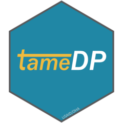

Import PSNUxIM targets from COP21 Data Pack & make tidy/usable. Updated from the COP19 and COP20 versions.
Installation
tameDP is not on CRAN, so you will have to install it directly from GitHub using remotes.
If you do not have remotes installed, you will have to run the install.packages("remotes") line in the code below as well.
## SETUP
#install package with vignettes
install.packages("remotes")
remotes::install_github("USAID-OHA-SI/tameDP")Use
The main function of tameDP is to bring import a COP Data Pack into R and make it tidy. The function aggregates the fiscal year targets up to the mechanism level, imports the mechanism information from DATIM, and breaks out the data elements to make the dataset more usable.
- Imports Data Pack as tidy data frame
- Breaks up data elements stored in the indicatorCode column into distinct columns
- Cleans up the HTS variables, separating modalities out of the indicator name
- Creates a statushiv column
- Cleans and separates PSNU and PSNU UID into distinct columns
- Adds in mechanism information from DATIM, including operatingunit, funding agency, partner and mechanism name
- Removes any rows with no targets
- Allows for aggregate to the PSNU level
#load package
library(tameDP)
#Data Pack file path
path <- "../Downloads/DataPack_Jupiter_20500101.xlsx"
#read in Data Pack & tidy
df_dp <- tame_dp(path)
#read in PLHIV and SUB_NAT data from the Data Pack
df_plhiv <- tame_dp(path, type = "PLHIV")You can use one of the map() functions from purrr package to read in multiple Data Packs and combine.
#load package
library(purrr)
#identify all the Data Pack files
files <- list.files("../Downloads/DataPacks", full.names = TRUE)
#read in all DPs and combine into one data frame
df_all <- map_dfr(.x = files,
.f = ~ tame_dp(.x, map_names = FALSE))
#apply mech_name and primepartner names from DATIM
df_all <- get_names(df_all)Disclaimer: The findings, interpretation, and conclusions expressed herein are those of the authors and do not necessarily reflect the views of United States Agency for International Development. All errors remain our own.